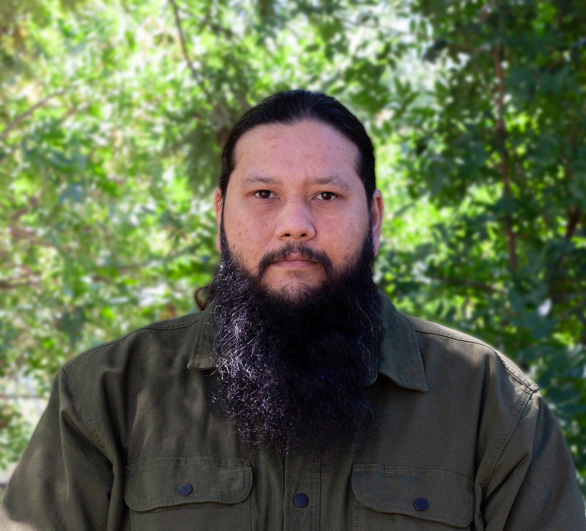

About
Pete Fala is a multidisciplinary artist based in Vacaville, California. Originally from the Island of Guam, he moved with his family to Vacaville in the early 2000s. Coming from three generations of artists, Fala developed a passion for drawing at an early age, inspired by watching his father sketch in a notepad. A self-taught artist, Fala works across a variety of mediums, allowing him to explore diverse techniques and perspectives in his practice. He has collaborated with the City of Vacaville and local businesses on numerous public art projects that enrich the community. Fala currently serves as a board member of the Vacaville Art League & Gallery. Fala believes art has the power to touch the soul and uplift the spirit of a community. He is committed to making art more accessible so that everyone can experience its transformative energy.
In his free time he enjoys exploring places, ideas and learning new things. He Believes the only thing that can't be taken from you is your experiences.